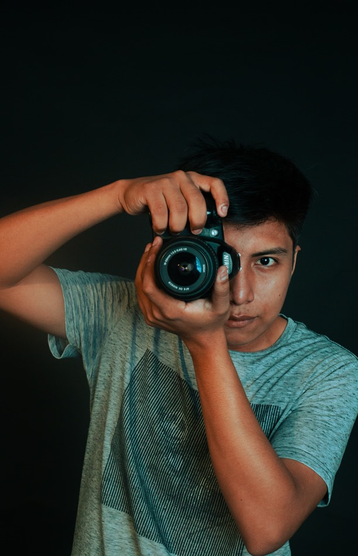
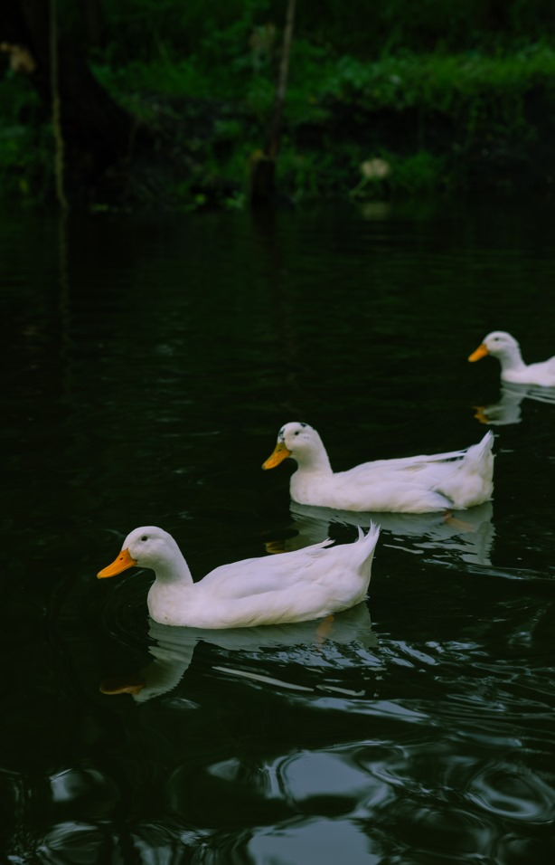
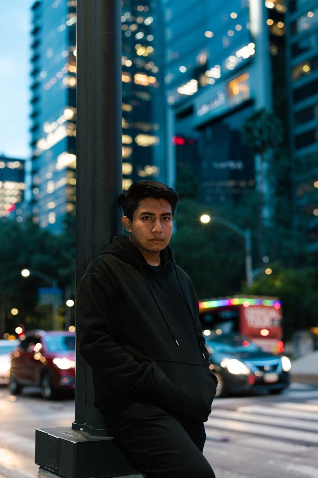
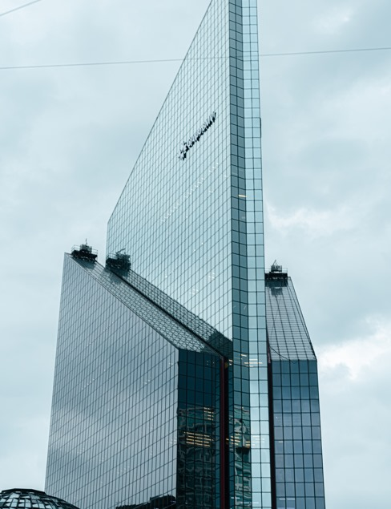

Blog de fotografía
Recorriendo el lente
Soy un fotógrafo de 20 años en camino a convertirme en desarrollador. Mi pasión por la fotografía ha sido constante desde siempre, y me ha llevado a tener experiencias únicas. Además, he tenido la oportunidad de viajar a diferentes lugares.
Te invito a explorar mi trabajo y ver cómo capturo el mundo a través de mi lente en [tu página web]. ¡Espero que disfrutes lo que ves!
Una de mis primeras fotos, la edité y la tomé con un trípode. Aquí empieza mi viaje en la fotografía.
En esta imagen podemos contemplar una encantadora pareja de patos, capturada en el hermoso entorno de Xochimilco, México. Eran apenas las 6 de la mañana cuando estas aves tan lindas nos deleitaron con su presencia en el tranquilo despertar del día
En mi primer día en la CDMX, decidí salir a explorar y conocer los alrededores del lugar donde me hospedaba. Aprovechando la ocasión como buen fotógrafo, no perdí la oportunidad de inmortalizar el momento con una foto que captura la esencia de mi nueva aventura.
La arquitectura de la CDMX me cautivó profundamente, por lo que me dediqué a capturar su belleza a través de varias fotografías.Cada rincón y detalle reflejaba una historia única que me fascinó.
